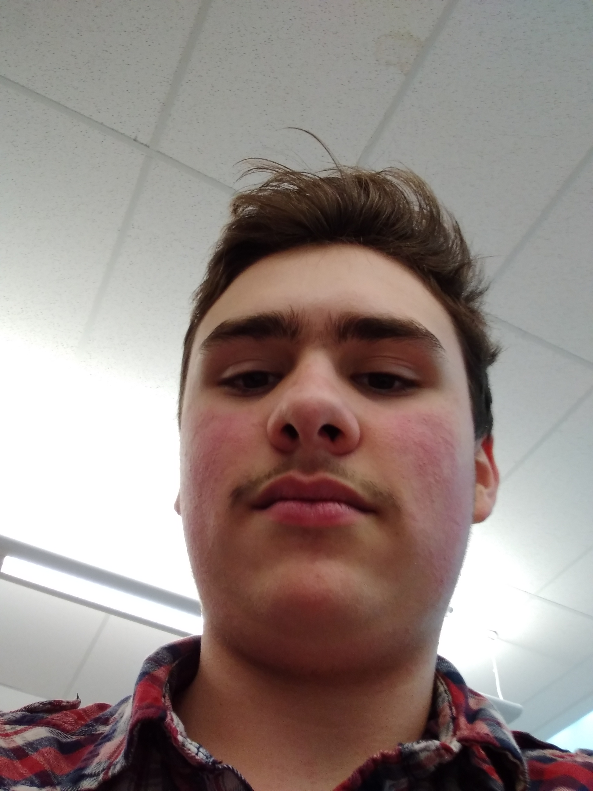

My name is Eric Flibotte. I was born in Canada in the year 2004. I am 15 years old and was born March 18. I speak 3 languages. The languages are French, Dutch and English. I am fluent in the enlgish language. My parents are of Dutch and French-Canadian origin. I enjoy playing badminton and learning about different sciences as well as history. My favorite classes are math, science and computer studies. I am male and identify as boy. I want to be an accountant when i grow up or I atleast wan tot work in field that deals greatly with math.
I took this course because accounting 11 was not available and I believed this would my second favorite course available. I enjoy dealing with computers and have already had some experience with coding before starting the course. During the course, I learned how use gamemaker to create games, as well as some simple tags and HTML coding. The gamemaker assignments showed me how to use different variables and other various things needed for making the games like the cartesian plane and the spritesheets. My favorite website is the lego website.
